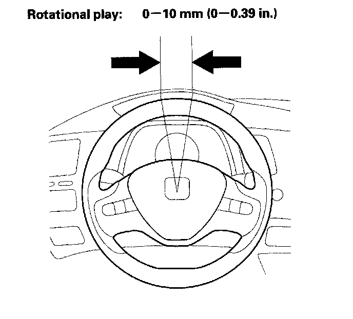

Steering Wheel Rotational Play Check
Steering Wheel Rotational Play Check1. Turn the front wheels to the straight ahead position.
2. Measure how far you can turn the steering wheel left and right without moving the front wheels.
^ If the play is within the limit, the gearbox and linkages are OK.
^ If the play exceeds the limit, adjust the rack guide. If the play is still excessive after rack guide adjustment, inspect the steering linkage and gearbox.
